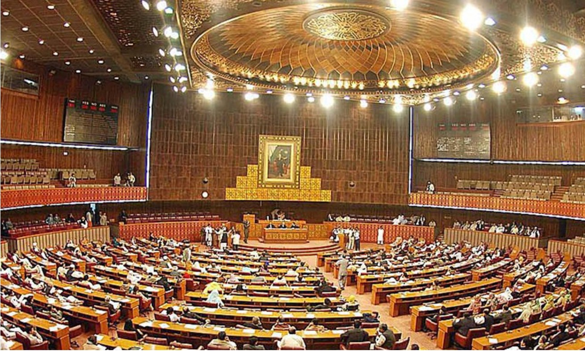
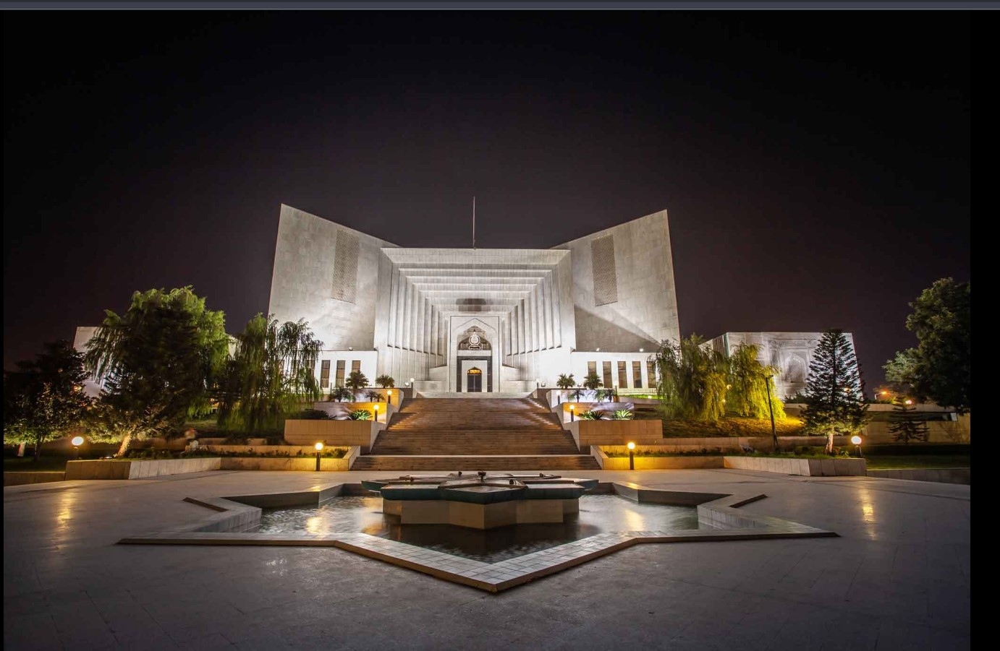

01 / DECISIONS
Case Law
Learn how reported judgments explain legal principles and how earlier decisions may relate to a legal issue.
Supreme Court website ↗A WEBSITE FOR LEGAL RESEARCHER.
A clearer starting point for law students and legal professionals exploring Pakistan's Constitution, legislation, courts and case-law resources.
Built for learning, research and legal awareness.
START YOUR RESEARCH
Legal research can feel overwhelming at first. Legal Verse organises important topics into simple starting points.
01 / DECISIONS
Learn how reported judgments explain legal principles and how earlier decisions may relate to a legal issue.
Supreme Court website ↗02 / FOUNDATIONS
Explore fundamental rights, the structure of the state and the roles of constitutional institutions.
Explore this section ↗03 / LEGISLATION
Discover introductory information about civil, criminal, family and other areas of law.
Browse law topics ↗04 / INSTITUTIONS
Understand the broad roles of superior courts and other judicial institutions.
Explore courts ↗
ISLAMABAD · PAKISTANTHE CONSTITUTIONAL FRAMEWORK
The Constitution is the supreme legal framework of Pakistan. It describes the structure of government, the distribution of powers and fundamental rights.
WHERE LAWS ARE DEBATED
The National Assembly is part of Pakistan's Parliament. Members debate public issues and consider legislation as part of the country's democratic process.
Parliament is a legislative institution, not a court.
Official National Assembly website ↗EXPLORE BY SUBJECT
These topics provide a starting point for exploring legal subjects and finding relevant legal materials.
State structure, constitutional powers and fundamental rights.
Offences, criminal procedure and administration of justice.
Private disputes, civil procedure and legal remedies.
Marriage, guardianship and family-related legal matters.
An introductory area of study within Pakistan's legal framework.
Research legislative changes and confirm the current official text.
THE JUDICIAL SYSTEM
Pakistan's judicial system includes superior courts and other courts with different jurisdictions. Always check official court resources when researching a legal question.
Supreme Court of Pakistan The country's highest court.
High Courts Superior courts with constitutional and other jurisdiction.
Other Courts Courts and tribunals with powers defined by law.

SUPREME COURT OF PAKISTANRESEARCH CAREFULLY
Before relying on a law or judgment, confirm its text, date, amendments and current status through an official or trusted legal source.
ABOUT LEGAL VERSE
Legal Verse is a student website concept inspired by the challenges of finding Pakistani case law and legal information. It organises introductory topics into a clear and approachable layout.
Educational disclaimer: This is a student prototype, not a live legal database and not legal advice. It does not automatically verify judgments or update legislation. Always consult official sources and qualified legal professionals.